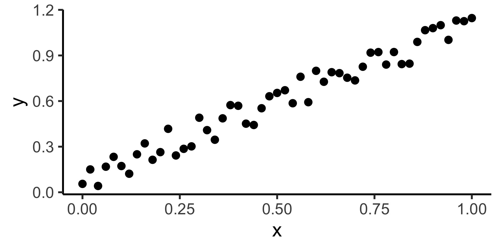

Regression vs. PCA
DSAN 5300: Statistical Learning
2025-02-03
The Central Tool of Data Science
\[ \DeclareMathOperator*{\argmax}{argmax} \DeclareMathOperator*{\argmin}{argmin} \newcommand{\bigexp}[1]{\exp\mkern-4mu\left[ #1 \right]} \newcommand{\bigexpect}[1]{\mathbb{E}\mkern-4mu \left[ #1 \right]} \newcommand{\definedas}{\overset{\small\text{def}}{=}} \newcommand{\definedalign}{\overset{\phantom{\text{defn}}}{=}} \newcommand{\eqeventual}{\overset{\text{eventually}}{=}} \newcommand{\Err}{\text{Err}} \newcommand{\expect}[1]{\mathbb{E}[#1]} \newcommand{\expectsq}[1]{\mathbb{E}^2[#1]} \newcommand{\fw}[1]{\texttt{#1}} \newcommand{\given}{\mid} \newcommand{\green}[1]{\color{green}{#1}} \newcommand{\heads}{\outcome{heads}} \newcommand{\iid}{\overset{\text{\small{iid}}}{\sim}} \newcommand{\lik}{\mathcal{L}} \newcommand{\loglik}{\ell} \DeclareMathOperator*{\maximize}{maximize} \DeclareMathOperator*{\minimize}{minimize} \newcommand{\mle}{\textsf{ML}} \newcommand{\nimplies}{\;\not\!\!\!\!\implies} \newcommand{\orange}[1]{\color{orange}{#1}} \newcommand{\outcome}[1]{\textsf{#1}} \newcommand{\param}[1]{{\color{purple} #1}} \newcommand{\pgsamplespace}{\{\green{1},\green{2},\green{3},\purp{4},\purp{5},\purp{6}\}} \newcommand{\prob}[1]{P\left( #1 \right)} \newcommand{\purp}[1]{\color{purple}{#1}} \newcommand{\sign}{\text{Sign}} \newcommand{\spacecap}{\; \cap \;} \newcommand{\spacewedge}{\; \wedge \;} \newcommand{\tails}{\outcome{tails}} \newcommand{\Var}[1]{\text{Var}[#1]} \newcommand{\bigVar}[1]{\text{Var}\mkern-4mu \left[ #1 \right]} \]
- If science is understanding relationships between variables, regression is the most basic but fundamental tool we have to start measuring these relationships
- Often exactly what humans do when we see data!
psychology
trending_flat

How Do We Define “Best”?
- Intuitively, two different ways to measure how well a line fits the data:


Principal Component Analysis
Principal Component Line can be used to project the data onto its dimension of highest variance
More simply: PCA can discover meaningful axes in data (unsupervised learning / exploratory data analysis settings)

Zooming In: Significance
| Estimate | Std. Error | t value | Pr(>|t|) | ||
|---|---|---|---|---|---|
| (Intercept) | 0.61969 | 0.59526 | 1.041 | 0.3010 | |
| industrial | 0.05253 | 0.02019 | 2.602 | 0.0111 | * |
| \(\widehat{\beta}\) | Uncertainty | Test statistic | How extreme is test stat? | Statistical significance |


Q-Q Plot
- If \((\widehat{y} - y) \sim \mathcal{N}(0, \sigma^2)\), points would lie on 45° line: